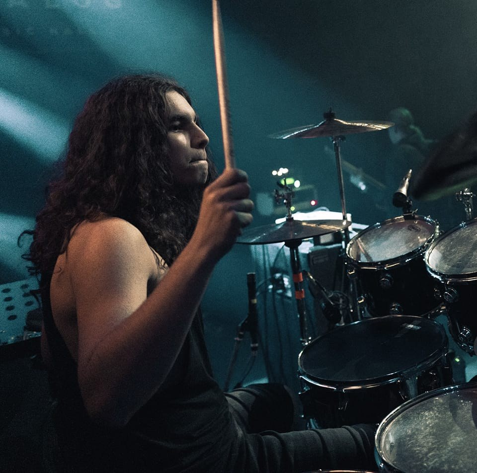
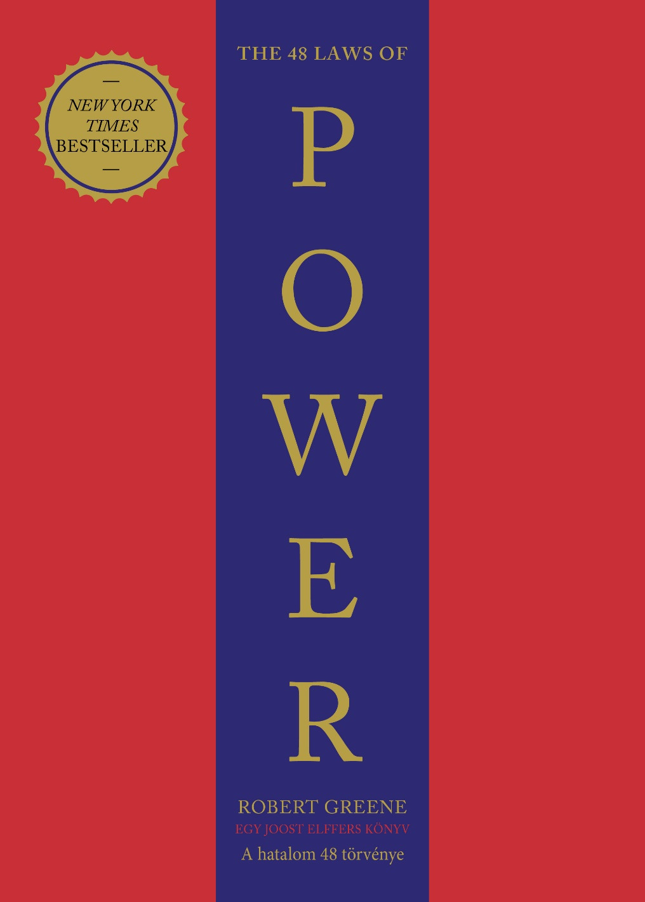

Az én hobbiaim
Zene
Alapvetően zenész vagyok. 10 Éve dobolok, 6 éve gitározok, autodidakta módon tanulok énekelni és zongorázni. Nem régiben saját számokat is elkezdtem írni. Zeneileg teljesen nyitott vagyok ugyanis a klasszikus számoktól kezdve a country-n, pop-on át metal-ig mindent hallgatok. Dob tudásomat próbálom tovább adni mivel, mostmár dobtanárként is tevékenykedem a Jamschool nevű dobiskolánál.

Tanulás
Már több éve annak hogy kiolvastam első könyvemet a pszichológia területén ami a "Testbeszéd enciklopédiája" című könyv volt Allen és Barbara Pease-től. Azóta annyira rákattantam a könyvekre hogy függője lettem és rosszul érzem magam ha nincsen nálam legalább egy darab olyan könyv amit még nem olvastam ki. Főként pszichológiát olvasok de gyakran kerülnek gazdaság-/pénzügyi illetve Filozófiai könyvek a kezembe.

Sport
Életembe több sportot is kipróbáltam már mint pl.: Vívás, Ping-Pong, Labdarúgás, Kézilabda. Jelenleg az edzőtermi edzések megszállottja vagyok. Remélem a későbbiekben szabadul fel annyi időm hogy elkezdhessek több sportágat is rendszeresen űzni egyidőbe, mert nagyon vonzódok a Tennis-hez és a harcművészetekhez.